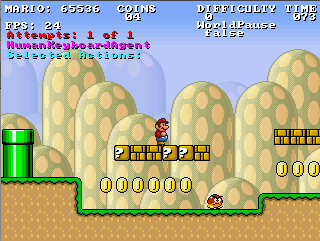

How does Dijkstra's Algorithm and A-Star compare?
I was looking at what the guys in the Mario AI Competition have been doing and some of them have built some pretty neat Mario bots utilizing the A* (A-Star) Pathing Algorithm.

(Video of Mario A* Bot In Action)
My question is, how does A-Star compare with Dijkstra? Looking over them, they seem similar.
Why would someone use one over the other? Especially in the context of pathing in games?
Answer
Dijkstra is a special case for A* (when the heuristics is zero).
Suggest
Dijkstra:
It has one cost function, which is real cost value from source to each node:
f(x)=g(x).
It finds the shortest path from source to every other node by considering only
real cost.
A* search:
It has two cost function.
-
g(x): same as Dijkstra. The real cost to reach a nodex. -
h(x): approximate cost from nodexto goal node. It is a heuristic function. This heuristic function should never overestimate the cost. That means, the real cost to reach goal node from nodexshould be greater than or equalh(x). It is called admissible heuristic.
The total cost of each node is calculated by f(x)=g(x)+h(x)
A* search only expands a node if it seems promising. It only focuses to reach the goal node from the current node, not to reach every other nodes. It is optimal, if the heuristic function is admissible.
So if your heuristic function is good to approximate the future cost, than you will need to explore a lot less nodes than Dijkstra.